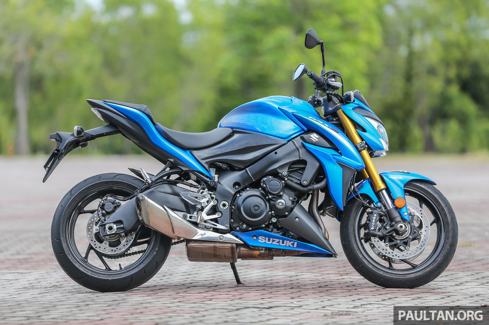
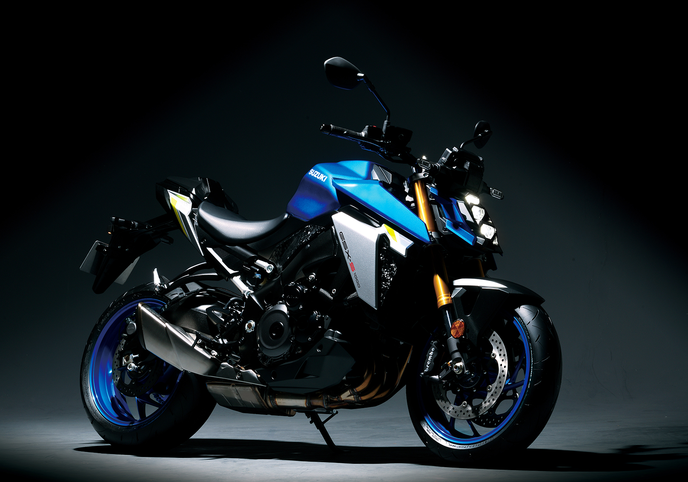
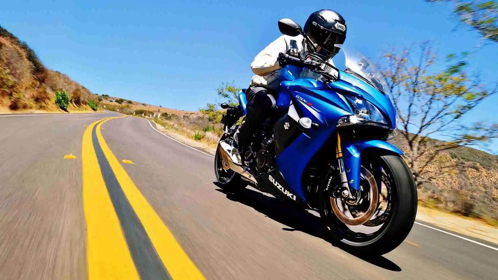
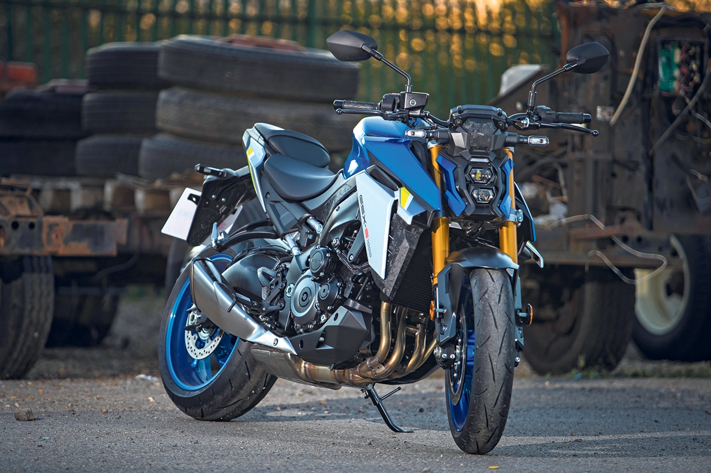
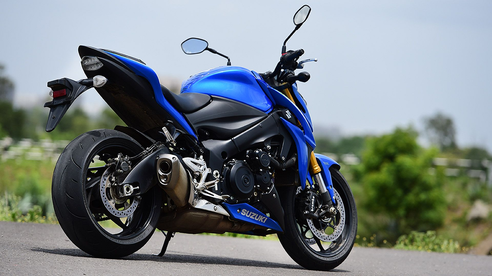

SUZUKI
SUZUKI
Is a standard motorcycle that is both powerful and agile¹.
The GSX-S1000 is powered by the long-stroke GSX-R1000 engine¹. The engine has been modified and retuned for lower-end RPM torque, making it ideal for commuting and cruising at slower speeds³. The engine produces a maximum peak output power of 148 bhp¹.
The GSX-S1000 features a cast aluminium frame that is lighter than Suzuki’s road-going superbike¹. It has a longer wheelbase and lazier steering geometry for stability on the road¹. The aluminium swingarm is lifted straight from the GSX-R1000¹. The GSX-S1000 has a kerb weight of 207 kg¹.
The stopping performance comes courtesy of large Brembo brakes lifted from the GSX-R1000¹.
The front suspension system employs durable 43 mm fully adjustable KYB items¹. The rear features link-type suspension¹.
As of 2024, the GSX-S1000 is available for £10,949².